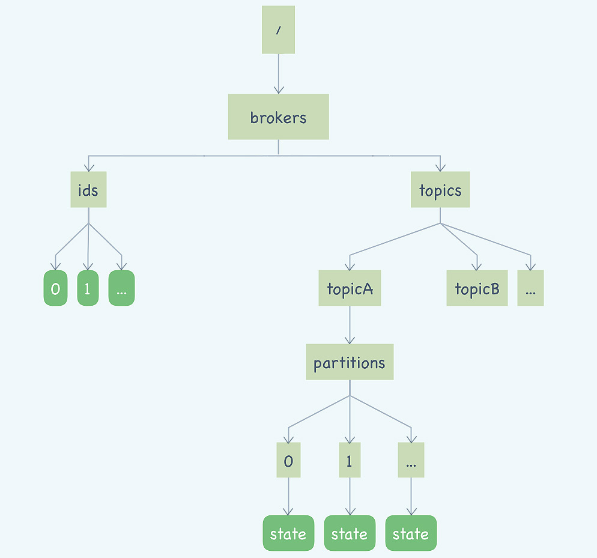

- 00 开篇词 优秀的程序员，你的技术栈中不能只有“增删改查”.md.html
- 00 预习 怎样更好地学习这门课？.md.html
- 01 为什么需要消息队列？.md.html
- 02 该如何选择消息队列？.md.html
- 03 消息模型：主题和队列有什么区别？.md.html
- 04 如何利用事务消息实现分布式事务？.md.html
- 05 如何确保消息不会丢失.md.html
- 06 如何处理消费过程中的重复消息？.md.html
- 07 消息积压了该如何处理？.md.html
- 08 答疑解惑（一） 网关如何接收服务端的秒杀结果？.md.html
- 09 学习开源代码该如何入手？.md.html
- 10 如何使用异步设计提升系统性能？.md.html
- 11 如何实现高性能的异步网络传输？.md.html
- 12 序列化与反序列化：如何通过网络传输结构化的数据？.md.html
- 13 传输协议：应用程序之间对话的语言.md.html
- 14 内存管理：如何避免内存溢出和频繁的垃圾回收？.md.html
- 15 Kafka如何实现高性能IO？.md.html
- 16 缓存策略：如何使用缓存来减少磁盘IO？.md.html
- 17 如何正确使用锁保护共享数据，协调异步线程？.md.html
- 18 如何用硬件同步原语（CAS）替代锁？.md.html
- 19 数据压缩：时间换空间的游戏.md.html
- 20 RocketMQ Producer源码分析：消息生产的实现过程.md.html
- 21 Kafka Consumer源码分析：消息消费的实现过程.md.html
- 22 Kafka和RocketMQ的消息复制实现的差异点在哪？.md.html
- 23 RocketMQ客户端如何在集群中找到正确的节点？.md.html
- 24 Kafka的协调服务ZooKeeper：实现分布式系统的“瑞士军刀”.md.html
- 25 RocketMQ与Kafka中如何实现事务？.md.html
- 26 MQTT协议：如何支持海量的在线IoT设备.md.html
- 27 Pulsar的存储计算分离设计：全新的消息队列设计思路.md.html
- 28 答疑解惑（二）：我的100元哪儿去了？.md.html
- 29 流计算与消息（一）：通过Flink理解流计算的原理.md.html
- 30 流计算与消息（二）：在流计算中使用Kafka链接计算任务.md.html
- 31 动手实现一个简单的RPC框架（一）：原理和程序的结构.md.html
- 32 动手实现一个简单的RPC框架（二）：通信与序列化.md.html
- 33 动手实现一个简单的RPC框架（三）：客户端.md.html
- 34 动手实现一个简单的RPC框架（四）：服务端.md.html
- 35 答疑解惑（三）：主流消息队列都是如何存储消息的？.md.html
- 加餐 JMQ的Broker是如何异步处理消息的？.md.html
- 结束语 程序员如何构建知识体系？.md.html
- 捐赠
24 Kafka的协调服务ZooKeeper：实现分布式系统的“瑞士军刀”
你好，我是李玥。
上节课我带你一起学习了 RocketMQ NameServer 的源代码，RocketMQ 的 NameServer 虽然设计非常简洁，但很好地解决了路由寻址的问题。
而 Kafka 却采用了完全不同的设计思路，它选择使用 ZooKeeper 这样一个分布式协调服务来实现和 RocketMQ 的 NameServer 差不多的功能。
这节课我先带大家简单了解一下 ZooKeeper，然后再来一起学习一下 Kafka 是如何借助 ZooKeeper 来构建集群，实现路由寻址的。
ZooKeeper 的作用是什么？
Apache ZooKeeper 它是一个非常特殊的中间件，为什么这么说呢？一般来说，像中间件类的开源产品，大多遵循“做一件事，并做好它。”这样的 UNIX 哲学，每个软件都专注于一种功能上。而 ZooKeeper 更像是一个“瑞士军刀”，它提供了很多基本的操作，能实现什么样的功能更多取决于使用者如何来使用它。
ZooKeeper 作为一个分布式的协调服务框架，主要用来解决分布式集群中，应用系统需要面对的各种通用的一致性问题。ZooKeeper 本身可以部署为一个集群，集群的各个节点之间可以通过选举来产生一个 Leader，选举遵循半数以上的原则，所以一般集群需要部署奇数个节点。
ZooKeeper 最核心的功能是，它提供了一个分布式的存储系统，数据的组织方式类似于 UNIX 文件系统的树形结构。由于这是一个可以保证一致性的存储系统，所以你可以放心地在你的应用集群中读写 ZooKeeper 的数据，而不用担心数据一致性的问题。分布式系统中一些需要整个集群所有节点都访问的元数据，比如集群节点信息、公共配置信息等，特别适合保存在 ZooKeeper 中。
在这个树形的存储结构中，每个节点被称为一个“ZNode”。ZooKeeper 提供了一种特殊的 ZNode 类型：临时节点。这种临时节点有一个特性：如果创建临时节点的客户端与 ZooKeeper 集群失去连接，这个临时节点就会自动消失。在 ZooKeeper 内部，它维护了 ZooKeeper 集群与所有客户端的心跳，通过判断心跳的状态，来确定是否需要删除客户端创建的临时节点。
ZooKeeper 还提供了一种订阅 ZNode 状态变化的通知机制：Watcher，一旦 ZNode 或者它的子节点状态发生了变化，订阅的客户端会立即收到通知。
利用 ZooKeeper 临时节点和 Watcher 机制，我们很容易随时来获取业务集群中每个节点的存活状态，并且可以监控业务集群的节点变化情况，当有节点上下线时，都可以收到来自 ZooKeeper 的通知。
此外，我们还可以用 ZooKeeper 来实现业务集群的快速选举、节点间的简单通信、分布式锁等很多功能。
下面我带你一起来看一下 Kafka 是如何来使用 ZooKeeper 的。
Kafka 在 ZooKeeper 中保存了哪些信息？
首先我们来看一下 Kafka 在 ZooKeeper 都保存了哪些信息，我把这些 ZNode 整理了一张图方便你来学习。
 你可能在网上看到过和这个图类似的其他版本的图，这些图中绘制的 ZNode 比我们这张图要多一些，这些图大都是描述的 0.8.x 的旧版本的情况，最新版本的 Kafka 已经将消费位置管理等一些原本依赖 ZooKeeper 实现的功能，替换成了其他的实现方式。
图中圆角的矩形是临时节点，直角矩形是持久化的节点。
我们从左往右来看，左侧这棵树保存的是 Kafka 的 Broker 信息，/brokers/ids/[0…N]，每个临时节点对应着一个在线的 Broker，Broker 启动后会创建一个临时节点，代表 Broker 已经加入集群可以提供服务了，节点名称就是 BrokerID，节点内保存了包括 Broker 的地址、版本号、启动时间等等一些 Broker 的基本信息。如果 Broker 宕机或者与 ZooKeeper 集群失联了，这个临时节点也会随之消失。
右侧部分的这棵树保存的就是主题和分区的信息。/brokers/topics/ 节点下面的每个子节点都是一个主题，节点的名称就是主题名称。每个主题节点下面都包含一个固定的 partitions 节点，pattitions 节点的子节点就是主题下的所有分区，节点名称就是分区编号。
每个分区节点下面是一个名为 state 的临时节点，节点中保存着分区当前的 leader 和所有的 ISR 的 BrokerID。这个 state 临时节点是由这个分区当前的 Leader Broker 创建的。如果这个分区的 Leader Broker 宕机了，对应的这个 state 临时节点也会消失，直到新的 Leader 被选举出来，再次创建 state 临时节点。
Kafka 客户端如何找到对应的 Broker？
那 Kafka 客户端如何找到主题、队列对应的 Broker 呢？其实，通过上面 ZooKeeper 中的数据结构，你应该已经可以猜的八九不离十了。是的，先根据主题和队列，在右边的树中找到分区对应的 state 临时节点，我们刚刚说过，state 节点中保存了这个分区 Leader 的 BrokerID。拿到这个 Leader 的 BrokerID 后，再去左侧的树中，找到 BrokerID 对应的临时节点，就可以获取到 Broker 真正的访问地址了。
在《[21 | Kafka Consumer 源码分析：消息消费的实现过程]》这一节课中，我讲过，Kafka 的客户端并不会去直接连接 ZooKeeper，它只会和 Broker 进行远程通信，那我们可以合理推测一下，ZooKeeper 上的元数据应该是通过 Broker 中转给每个客户端的。
下面我们一起看一下 Kafka 的源代码，来验证一下我们的猜测是不是正确的。
在之前的课程中，我和大家讲过，客户端真正与服务端发生网络传输是在 org.apache.kafka.clients.NetworkClient#poll 方法中实现的，我们一直跟踪这个调用链：
NetworkClient#poll() -> DefaultMetadataUpdater#maybeUpdate(long) -> DefaultMetadataUpdater#maybeUpdate(long, Node)
直到 maybeUpdate(long, Node) 这个方法，在这个方法里面，Kafka 构造了一个更新元数据的请求：
private long maybeUpdate(long now, Node node) {
String nodeConnectionId = node.idString();
if (canSendRequest(nodeConnectionId, now)) {
// 构建一个更新元数据的请求的构造器
Metadata.MetadataRequestAndVersion metadataRequestAndVersion = metadata.newMetadataRequestAndVersion();
inProgressRequestVersion = metadataRequestAndVersion.requestVersion;
MetadataRequest.Builder metadataRequest = metadataRequestAndVersion.requestBuilder;
log.debug("Sending metadata request {} to node {}", metadataRequest, node);
// 发送更新元数据的请求
sendInternalMetadataRequest(metadataRequest, nodeConnectionId, now);
return defaultRequestTimeoutMs;
}
//...
}
这段代码先构造了更新元数据的请求的构造器，然后调用 sendInternalMetadataRequest() 把这个请求放到待发送的队列中。这里面有两个地方我需要特别说明一下。
第一点是，在这个方法里面创建的并不是一个真正的更新元数据的 MetadataRequest，而是一个用于构造 MetadataRequest 的构造器 MetadataRequest.Builder，等到真正要发送请求之前，Kafka 才会调用 Builder.buid() 方法把这个 MetadataRequest 构建出来然后发送出去。而且，不仅是元数据的请求，所有的请求都是这样来处理的。
第二点是，调用 sendInternalMetadataRequest() 方法时，这个请求也并没有被真正发出去，依然是保存在待发送的队列中，然后择机来异步批量发送。
请求的具体内容封装在 org.apache.kafka.common.requests.MetadataRequest 这个对象中，它包含的信息很简单，只有一个主题的列表，来表明需要获取哪些主题的元数据，另外还有一个布尔类型的字段 allowAutoTopicCreation，表示是否允许自动创建主题。
然后我们再来看下，在 Broker 中，Kafka 是怎么来处理这个更新元数据的请求的。
Broker 处理所有 RPC 请求的入口类在 kafka.server.KafkaApis#handle 这个方法里面，我们找到对应处理更新元数据的方法 handleTopicMetadataRequest(RequestChannel.Request)，这段代码是用 Scala 语言编写的：
def handleTopicMetadataRequest(request: RequestChannel.Request) {
val metadataRequest = request.body[MetadataRequest]
val requestVersion = request.header.apiVersion
// 计算需要获取哪些主题的元数据
val topics =
// 在旧版本的协议中，每次都获取所有主题的元数据
if (requestVersion == 0) {
if (metadataRequest.topics() == null || metadataRequest.topics.isEmpty)
metadataCache.getAllTopics()
else
metadataRequest.topics.asScala.toSet
} else {
if (metadataRequest.isAllTopics)
metadataCache.getAllTopics()
else
metadataRequest.topics.asScala.toSet
}
// 省略掉鉴权相关代码
// ...
val topicMetadata =
if (authorizedTopics.isEmpty)
Seq.empty[MetadataResponse.TopicMetadata]
else
// 从元数据缓存过滤出相关主题的元数据
getTopicMetadata(metadataRequest.allowAutoTopicCreation, authorizedTopics, request.context.listenerName,
errorUnavailableEndpoints, errorUnavailableListeners)
// ...
// 获取所有 Broker 列表
val brokers = metadataCache.getAliveBrokers
trace("Sending topic metadata %s and brokers %s for correlation id %d to client %s".format(completeTopicMetadata.mkString(","),
brokers.mkString(","), request.header.correlationId, request.header.clientId))
// 构建 Response 并发送
sendResponseMaybeThrottle(request, requestThrottleMs =>
new MetadataResponse(
requestThrottleMs,
brokers.flatMap(_.getNode(request.context.listenerName)).asJava,
clusterId,
metadataCache.getControllerId.getOrElse(MetadataResponse.NO_CONTROLLER_ID),
completeTopicMetadata.asJava
))
}
这段代码的主要逻辑是，先根据请求中的主题列表，去本地的元数据缓存 MetadataCache 中过滤出相应主题的元数据，也就是我们上面那张图中，右半部分的那棵树的子集，然后再去本地元数据缓存中获取所有 Broker 的集合，也就是上图中左半部分那棵树，最后把这两部分合在一起，作为响应返回给客户端。
Kafka 在每个 Broker 中都维护了一份和 ZooKeeper 中一样的元数据缓存，并不是每次客户端请求元数据就去读一次 ZooKeeper。由于 ZooKeeper 提供了 Watcher 这种监控机制，Kafka 可以感知到 ZooKeeper 中的元数据变化，从而及时更新 Broker 中的元数据缓存。
这样就完成了一次完整的更新元数据的流程。通过分析代码，可以证实，我们开始的猜测都是没有问题的。
小结
最后我们对这节课的内容做一个总结。
首先，我们简单的介绍了 ZooKeeper，它是一个分布式的协调服务，它的核心服务是一个高可用、高可靠的一致性存储，在此基础上，提供了包括读写元数据、节点监控、选举、节点间通信和分布式锁等很多功能，这些功能可以极大方便我们快速开发一个分布式的集群系统。
但是，ZooKeeper 也并不是完美的，在使用的时候你需要注意几个问题：
- 不要往 ZooKeeper 里面写入大量数据，它不是一个真正意义上的存储系统，只适合存放少量的数据。依据服务器配置的不同，ZooKeeper 在写入超过几百 MB 数据之后，性能和稳定性都会严重下降。
- 不要让业务集群的可用性依赖于 ZooKeeper 的可用性，什么意思呢？你的系统可以使用 Zookeeper，但你要留一手，要考虑如果 Zookeeper 集群宕机了，你的业务集群最好还能提供服务。因为 ZooKeeper 的选举过程是比较慢的，而它对网络的抖动又比较敏感，一旦触发选举，这段时间内的 ZooKeeper 是不能提供任何服务的。
Kafka 主要使用 ZooKeeper 来保存它的元数据、监控 Broker 和分区的存活状态，并利用 ZooKeeper 来进行选举。
Kafka 在 ZooKeeper 中保存的元数据，主要就是 Broker 的列表和主题分区信息两棵树。这份元数据同时也被缓存到每一个 Broker 中。客户端并不直接和 ZooKeeper 来通信，而是在需要的时候，通过 RPC 请求去 Broker 上拉取它关心的主题的元数据，然后保存到客户端的元数据缓存中，以便支撑客户端生产和消费。
可以看到，目前 Kafka 的这种设计，集群的可用性是严重依赖 ZooKeeper 的，也就是说，如果 ZooKeeper 集群不能提供服务，那整个 Kafka 集群也就不能提供服务了，这其实是一个不太好的设计。
如果你需要要部署大规模的 Kafka 集群，建议的方式是，拆分成多个互相独立的小集群部署，每个小集群都使用一组独立的 ZooKeeper 提供服务。这样，每个 ZooKeeper 中存储的数据相对比较少，并且如果某个 ZooKeeper 集群故障，只会影响到一个小的 Kafka 集群，故障的影响面相对小一些。
Kafka 的开发者也意识到了这个问题，目前正在讨论开发一个元数据服务来替代 ZooKeeper，感兴趣的同学可以看一下他们的Proposal。
© 2019 - 2023 Liangliang Lee. Powered by gin and hexo-theme-book.